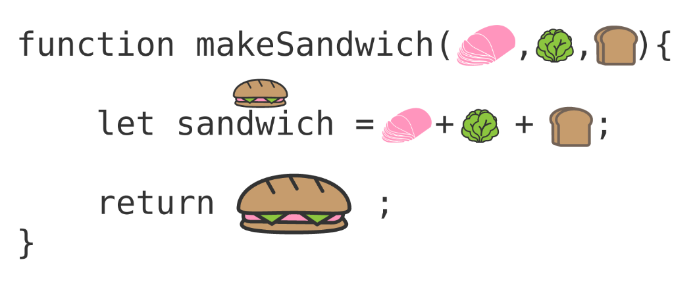
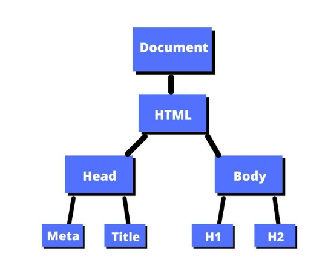

Do you like Lord of the Rings? If yes, Perfect! If not, sorry you’ll just have to deal with this analogy. The relationship these languages have together can be looked at as the journey to Mordor.
If you consider your objective (website, app, etc..) that would be the equivalent of the journey to Mordor to destroy the ring. And the characters we choose determine how we can interact with the journey.
A Hobbit would be your HTML of the journey. He’s said lets pack some food, essentials, a good attitude and a hint of bravery to make this journey possible. Just like HTML our basic structure to complete our task is done here. This builds all we need to make the journey possible.
CSS would be the next stage such as your warriors/fighters. Here you can decide to give your HTML a sword or bow to handle any enemies, or give yourself long straight Elven hair like Legolas and look stunning while fighting. CSS just enhances your HTML to accessories and make the journey a little more enjoyable. It beautifies your HTML.
Lastly the JavaScript. And yes you guessed it, this is the magic to your code. This is the Gandalf to your code and makes everything better. This enhances your code with interactivity that will feel like magic.
They all interact with the journey (website, app) in their own way and are all needed to complete the quest.
Control flow is the way in which your code is read and then followed by your computer. From top to bottom the computer will execute the statements you create one by one. This is the structure in how we write our code.
Loops are as it sounds, a loop. How we would layout a loop is to specify steps for the computer to take and extract whatever information and repeated until condition is met.
Control flow and loop is exactly like washing a baby. We know the flow we wash our baby is to go from head to toe. Our loop would be to follow that order and once we get to the end while including a review process to ensure we’ve not missed anything. We’d repeat this until the condition of being completely clean is met.
Arrays is a list of information that is stored in a specific order. We can access these through indexes that all hold a numerical value. Objects on the other hand represent a subject in your code like a person for example. And in your object you can place in specific characteristics like their age, height, name, place they were born in. Objects hold a key and value of a subject. Just like arrays these can be accessed too but through their keys instead.
Functions are great for way for you to write a container of code that execute a task or calculates a value, and then store it within a name that can be accessed anywhere and anytime without the need to rewrite the entire container of code. For example you could look at them like burger types at McDonald’s. If you walked up to a self-order machine, all their burger types would be functions that have a specific instruction to create the burgers. So if you select a Big Mac, it knows that the burger with that name holds a very specific recipe, and that is what will need to be created and then returned to you the customer.
The DOM (Document Object Model) is a way for me to interact with objects in an HTML document. Just like the DevTools I can access through web browser. DevTools grant me access to view the whole website, but with the DOM I can target specific things I want and adjust the HTML and JavaScript. DOM is viewed like a family tree which acts as a map to target the specific code we are looking to change.
